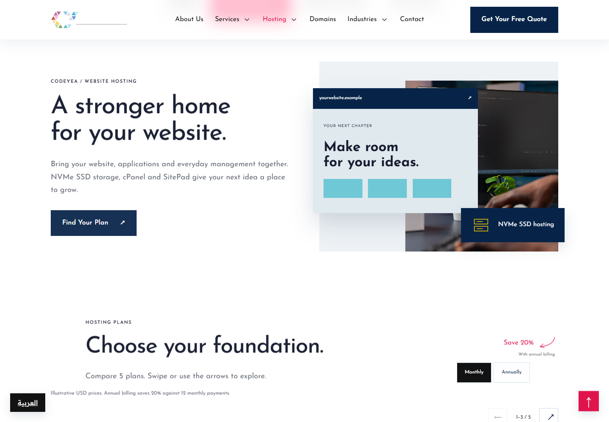
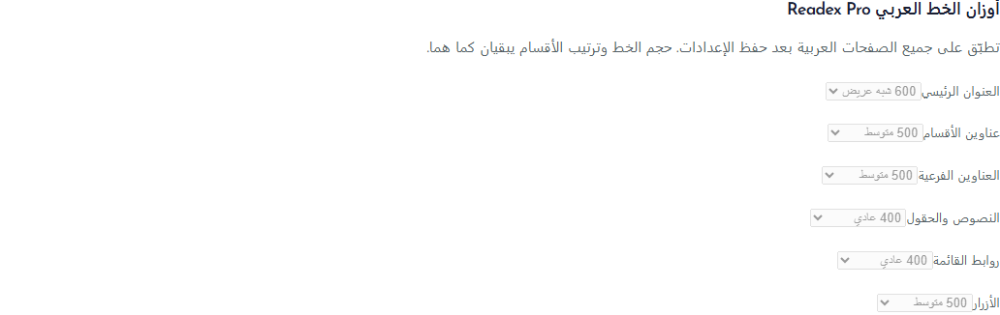

مراجعة التصحيحات وتنسيق النسخة العربية
هذه صور للتطبيق الفعلي على الجهاز وتعديلات مسودات CMS المحلية. هذه الدفعة جاهزة للنشر المعتمد على GitHub وVercel بعد إكمال فحوص الإصدار. الصور ثابتة؛ استخدم روابط الصفحات لفحص الهوفر والحركة. لقطات المقارنة تعرض طلبك والتطبيق ولا تعني تطابق حالتي الهوفر في صورتين ثابتتين.
التحقق: 64 صفحة باللغتين، 61 وجهة داخلية دون أخطاء استجابة، 32 صفحة عربية بعرض موبايل 390px دون تجاوز أفقي، 167 اختبارًا ناجحًا، وفحص TypeScript وبناء الإنتاج. الروابط السياقية داخل النصوص تتبع لغة الصفحة. زر العودة للأعلى يظهر من الأسفل ويطفو بخفة ويعمل عند النقر.
الهوفر وحركة الفواصل فُحصا في المتصفح؛ الصور أدناه للمراجعة البصرية. قسم الشعارات لا يتطلب إضافة شعارات جديدة: يتحكم خيار CMS بإظهار الشعارات الموجودة والمفعّلة.
قسم الشعارات بعد الهيرو , التطبيق الفعلي1. القائمة والاستضافة
تأشير الاستضافة والرابط الفرعي المفتوح معًا، دون تأشير الخدمات. ترتيب الميغا منيو وتباعد الأسهم. افتح الصفحة والحركة
2. الهيدر عند التمرير
خلفية زجاجية ضبابية؛ تصغير الشعار والنص دون تصغير زر العرض. زر اللغة العائم ظاهر هنا بمحاكاة بلد مؤهل في الفحص المحلي. افتح الصفحة والحركة
المرفق الذي أرسلته , المرجع أو المشكلة
التطبيق الفعلي المحلي بعد التصحيح 3. مقدمة الصفحة الرئيسية
إعادة المقدمة وتحديث صياغتها لهوية كوديا الحالية. قسم الشعارات يتحكم به خيار الإظهار في CMS. افتح الصفحة والحركة
4. الخدمات العربية
Readex Pro بأوزان متفاوتة، محاذاة عربية وحجم أقل وتباعد منتظم بين النصوص. افتح الصفحة والحركة
5. مسافات الصورة والنص
موازنة عمودَي الصورة والنص والمسافة بينهما ضمن حدود المحتوى. افتح الصفحة والحركة
6. الكتابة الطولية بجانب الصورة
وضع العبارة الطولية على يمين الصورة وضبط مقاس العنوان والنص. افتح الصفحة والحركة
7. قسم القدرات والحركة
عنوان عربي أصغر ومحاذاة يمين، فواصل طولية وخط أبيض يصعد عند الهوفر. لكل رابط وصف ووجهة مختلفان باللغتين. الحركة تراجع عبر الصفحة المباشرة. افتح الصفحة والحركة
8. عرض الخدمات المرقّم
مربعات الأرقام إلى اليسار، روابط الأزرار مفعّلة، ومسافة مستقلة للسهم مع حركته. افتح الصفحة والحركة
9. القسم الأسود المشترك
ضبط حدود المحتوى وتوزيع النص والقائمتين على المساحة الموجودة. التعديل مشترك في قوالب الخدمات المستخدمة. افتح الصفحة والحركة
10. قائمة خدمات القطاعات
عنوان واحد وقائمة مرتبة من ثماني خدمات بروابطها الفعلية. الهوفر يتضمن حركة ولونًا وظلًا للنص. افتح الصفحة والحركة
11. سلايدر القطاعات العربي
البداية من اليمين دون المساحة الفارغة، تحكم باتجاه عربي، إيقاف مؤقت بالعربية وحشو أوسع لنصوص الكارتات. افتح الصفحة والحركة
12. حقول النموذج والأسهم
تعريب النصوص داخل الحقول. الإطار والنص يتحولان للأحمر عند الهوفر أو التركيز. السهم يبقى مائلًا ثم يدور أفقيًا. افتح الصفحة والحركة
أوزان الخط العربي في CMS
ستة إعدادات مستقلة للعناوين الرئيسية وعناوين الأقسام والعناوين الفرعية والنصوص والمنيو والأزرار. الأوزان المتاحة من 200 إلى 700.
